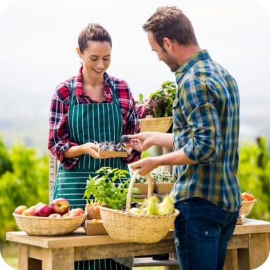
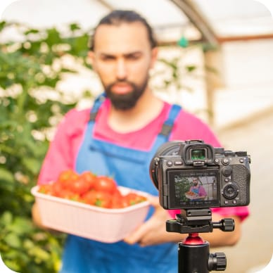
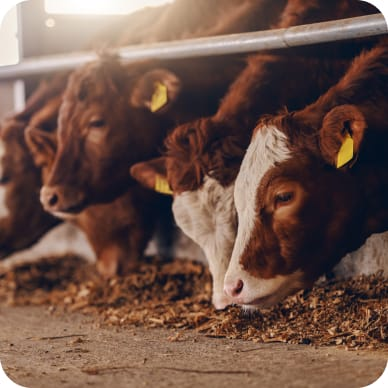
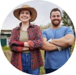
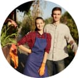

Discover Our Roots: The Story of Farm Fresh Harvests
Welcome to Farm Fresh Harvests, and thank you for taking the time to learn more about who we are and what we stand for. Our network is a collective of family-run farms dedicated to the principles of sustainability, eco-friendliness, and the delivery of nature's finest products directly to your table. We're united by a common mission: to cultivate food that's good for you, your family, and the planet.
Our Story: Cultivating Change, One Farm at a Time
Explore eco-friendly essentials from Farm Fresh Harvests. Enjoy organic produce, free-range eggs, artisanal cheese, and more, all sustainably sourced.
- 
-
Water Features
Farm Fresh Harvests sprouted from a vision to harmonize farming with nature. Challenged by the impacts of conventional agriculture, our founders embarked on a mission to cultivate food sustainably, respecting the earth and nourishing communities.
- 
-
Growth & Innovation
Our journey is rooted in organic practices, embracing the challenges of nature with resilience and innovation. From humble beginnings, we've grown by learning from each farm's unique ecosystem, implementing renewable energy sources, and pioneering eco-friendly farming techniques.
- 
-
Community & Future
Today, our network embodies a collective commitment to sustainability, producing food that's good for people and the planet. Looking ahead, we're excited to deepen our impact, inviting you to join us in nurturing a greener future.
Meet Our Farmers
Behind every product is a story of dedication, care, and a deep connection to the land. Meet some of the incredible farmers who make up our network
- 
John & Mary Harper
Who transformed their family land into an organic produce haven using water-saving techniques and renewable energy.
-
Elena Rodriguez
A pioneer in biodynamic farming, focusing on holistic, ecological, and ethical approaches to her vineyards and orchards.
- 
The Nguyen Family
Who blend traditional farming methods with innovative technology to grow the most flavorful heritage tomatoes.
Quality Assurance: Our Promise to You
At Farm Fresh Harvests, we guarantee every product reflects our highest standards for quality, sustainability, and ethical practices. Here's how we ensure excellence:
-
Seed to Table Transparency
Every product you enjoy comes directly from farms no more than a few hours away, ensuring freshness and reducing carbon footprints.
-
Eco-Conscious Quality Checks
Our products undergo strict evaluations to ensure they meet our high standards for organic integrity and environmental stewardship.
-
Sustainable Packaging
We use environmentally friendly packaging to ensure our products reach you fresh and with minimal impact on the planet.
Stay updated with the latest from our farms!